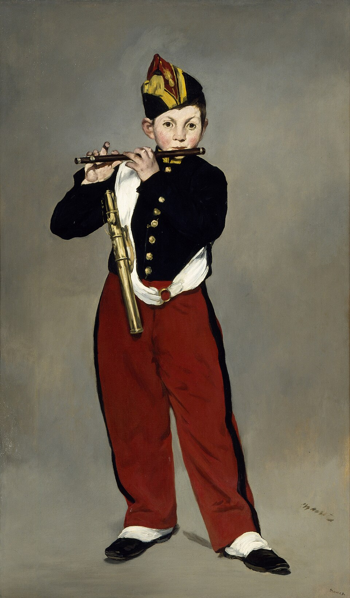

吹笛少年 The Fifer
马奈 · 1866年 · 巴黎奥赛博物馆
Édouard Manet · 1866 · Musée d'Orsay, Paris
图片：Wikimedia Commons，公有领域 / Image: Wikimedia Commons, public domain

发现 · Discover
帝国卫队的少年 A boy from the Imperial Guard
画中是拿破仑三世帝国卫队乐队里的一个少年乐手，他的名字没有留下来。
He is a young musician from the band of Napoleon III's Imperial Guard. His name has not come down to us.
制服 The uniform
他穿着缀着金扣子的黑上衣、红裤子，戴着一顶装饰过的帽子。
He wears a black jacket with gold buttons, red trousers and a decorated cap.
消失的背景 A vanishing background
背景是一片平坦的灰色，地面和墙几乎分不清。
The background is a flat, plain grey; floor and wall can barely be told apart.
几道白线 A few white strokes
衣服的褶皱，只用几道白色线条就勾了出来。
The folds of his clothes are marked by just a few streaks of white.
来自委拉斯开兹 From Velázquez
1865年，马奈在马德里的普拉多博物馆看到委拉斯开兹的画，深受启发。
In 1865, at the Prado in Madrid, Manet saw the paintings of Velázquez and was deeply inspired.
像一位贵族 Like a nobleman
一个普通的少年乐手，被马奈画得像一位西班牙贵族。
An ordinary young musician, painted by Manet like a Spanish grandee.
故事 · The story
普拉多的启发 Inspiration at the Prado
1865年，马奈去西班牙旅行，在普拉多博物馆看到了委拉斯开兹的画。他说，在委拉斯开兹的一幅画里，背景消失了，围绕着人物的是空气。
In 1865, Manet travelled to Spain and saw the paintings of Velázquez at the Prado. In one of them, he said, the background disappears: it is air that surrounds the figure.
1866年 · 巴黎奥赛博物馆 / 1866 · Musée d'Orsay, Paris
被拒绝 Rejected
回到巴黎后，他画了这个少年乐手。1866年，官方沙龙拒绝了这幅画。
Back in Paris, he painted this young musician. In 1866, the official Salon rejected it.
1866年 · 巴黎奥赛博物馆 / 1866 · Musée d'Orsay, Paris
左拉的支持 Zola's support
作家左拉却在这幅画里看到了一种真正现代的感觉，开始公开为马奈辩护。1911年，它进入了法国国家收藏。
The writer Émile Zola, however, saw a truly modern feeling in it, and began to defend Manet in public. In 1911 the painting entered the French national collection.
1866年 · 巴黎奥赛博物馆 / 1866 · Musée d'Orsay, Paris
背景消失了，围绕着他的是空气。 The background disappears: it is air that surrounds him.
作品档案 · Artwork record
| 画家（生卒年） · Artist (dates) | 爱德华·马奈（1832–1883） / Édouard Manet (1832–1883) |
|---|---|
| 画名 · Title | 吹笛少年 / The Fifer (Le Fifre) |
| 年份 · Date | 1866年 / 1866 |
| 材质 · Medium | 布面油画 / Oil on canvas |
| 尺寸 · Dimensions | 160.5 × 97 cm |
| 收藏地 · Collection | 巴黎奥赛博物馆（1911年随伊萨克·德·卡蒙多伯爵的遗赠进入国家收藏） / Musée d'Orsay, Paris (Count Isaac de Camondo bequest, 1911) |
关于画家 · About the artist
爱德华·马奈（1832–1883），法国画家，生于巴黎。他是描绘现代生活的先驱，对印象派画家影响很深。
Édouard Manet (1832–1883) was a French painter, born in Paris. A pioneer in painting modern life, he had a deep influence on the Impressionists.
更多马奈的画 · More by Édouard Manet